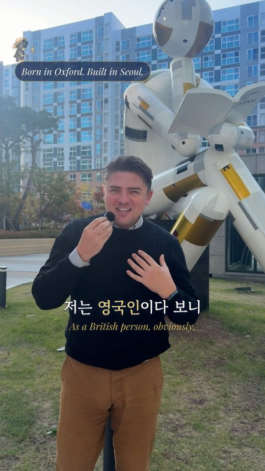
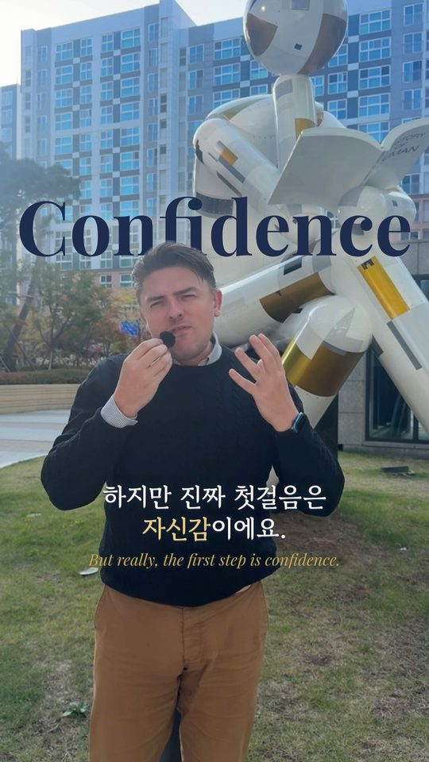
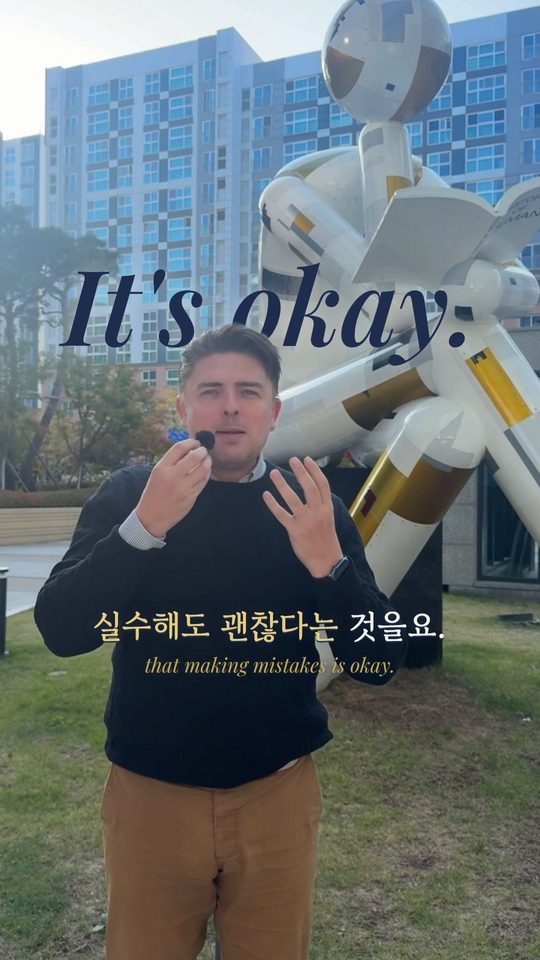
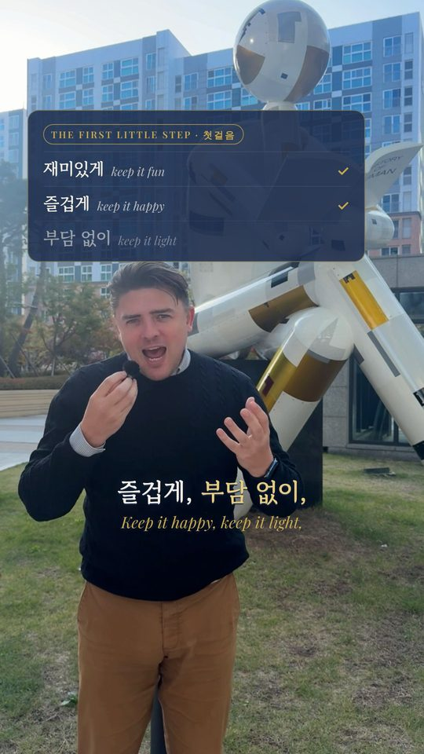
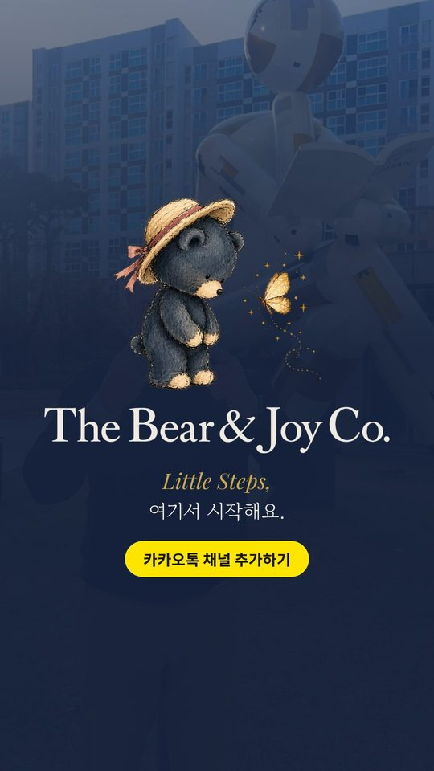

Each still below is rendered from your real footage with the approved brand: Gowun Batang Korean captions using your translations, your English underneath in gold, navy words behind your head, and your logo on the end card. Nothing is exported until you say so.
The hook, then straight to "the first step is confidence", your Korean example, "making mistakes is okay", fun / happy / light, and the end card. This fits the 15–35 s reach rule in your brand sheet. Scenes marked Short below.
Your whole answer, including Korea and appearance and "As a British person". It works as a deeper post or as a pinned reel. It's under your 90 s limit, with the end card included.
"Why do Korean parents worry about pronunciation?"한국 부모들은 왜 아이 영어 발음을 걱정할까요?
"I think in Korea, appearance is so important… incredibly important to Korean parents…"제 생각에 한국에서는 겉으로 보이는 모습을…

"As a British person, obviously, I have a very distinctive accent… it shouldn't be the first little step."저는 영국인이다 보니…

"But really, the first step is confidence."하지만 진짜 첫걸음은 자신감이에요.
"My accent in Korean is terrible. 오른쪽? 왼쪽? 배고파요? See? It's awful. But I have the confidence."

"It's important that children feel that making mistakes is okay. Otherwise, they're forever tested…"실수해도 괜찮다는 것을요.

"Keep it fun. Keep it happy, keep it light."재미있게 · 즐겁게 · 부담 없이

"Let's get that confidence going. And that's the first little step."그게 바로 첫 번째 작은 걸음이에요.
| Source time | What's removed | Why |
|---|---|---|
| 0:00.0–0:00.5 | Silence before you speak | Start on the first word |
| 0:04.2–0:08.5 | "Yeah, that's a good question. And one that I get asked a lot." | Brand rule: first value by 5 s, no intros |
| 0:18.2–0:18.6 | Pause | Longer than 0.4 s |
| 0:38.5–0:38.9 | Pause | Longer than 0.4 s |
| 1:27.7–1:30.4 | Ending after you finish | The end card takes over |
You speak almost nonstop, so there are only three real pauses to trim. The rest of your natural rhythm stays.